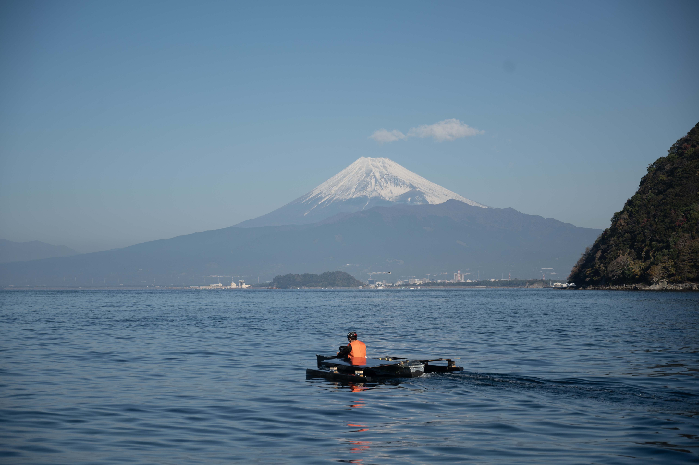
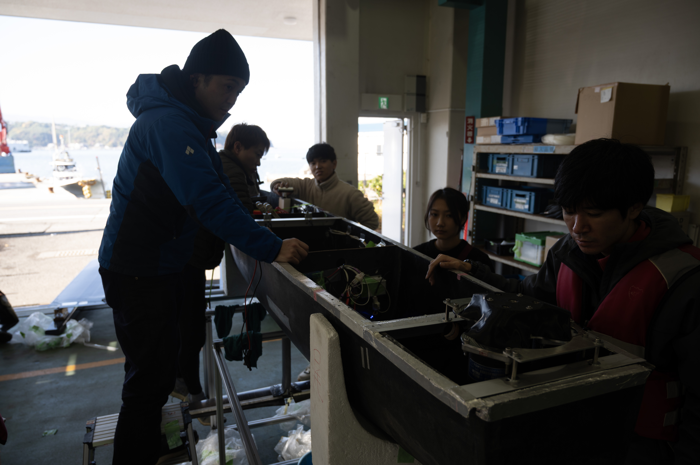

東京大学ソーラーボートレーシング
UNIVERSITY OF TOKYO SOLAR BOAT RACING
🦅
YATAGARASU
☀️
水面を翔ける、未来を創る。
次世代の船を、君の手で。
2025年度 ソーラー・人力ボートレース全日本選手権大会
ソーラーAクラス 総合準優勝 ＆ 会長特別賞 受賞！

こんな東大生におすすめ！
- ⚙️ものづくりが好き
- 🚀航空／船舶／機械に興味がある
- 💻AIやシミュレーションに関わりたい
- 🤝チームで大きなプロジェクトをやりたい
部員数7名（東大生100%）。経験・文理不問。
必要なのは「圧倒的な熱量」です。
QRコード
PROJECT & VISION
東京大学ソーラーボートレーシング
短期目標 (2026年度)
「翼走」の実現
船体が水面から浮いた状態で高速航行する「翼走（フォイリング）」を目指します。
プロペラ製作
水中翼の改良
推進系の再設計（船外機製作）
長期目標
完全自律操船 ＆ モナコへの挑戦
AIによる自律操船システムを構築し、世界最高峰の環境配慮型ボートレース「Monaco Energy Boat Challenge」に出場します。
操縦系の電気制御
AI・機械学習
クリーンエネルギー
私たちが触れる技術・分野
ボート・造船
航空工学
工作機械・CAD
CFD (流体解析)
MBSE/MBD開発
シミュレーション
デジタルツイン
AI・センサ・制御
海運・物流
プロジェクトマネジメント
活動インフォメーション
| 活動頻度 |
週1回MTG（1時間程度、メンバーで日程調整） ※実際の開発作業は内容・時期・個人の熱量に応じて柔軟に活動しています。 |
|---|---|
| 活動場所 | 東京大学 船型試験水槽（本郷キャンパス） |
| メンバー構成 | 7名（東大生のみ） |
QRコード
ダミー
ダミー
入部希望・見学・お問い合わせはこちら！
公式LINEやTwitter(X)のDMからお気軽にご連絡ください。
水槽見学も随時受け付けています。

最高の環境で、共に挑もう。